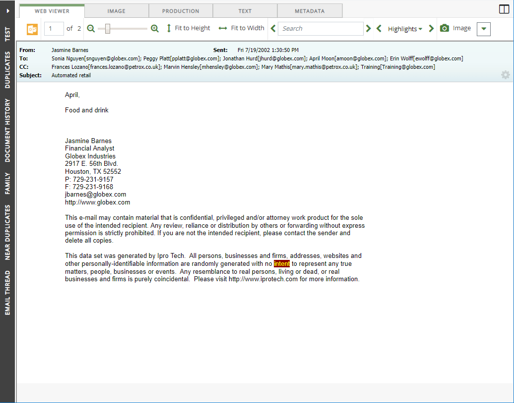
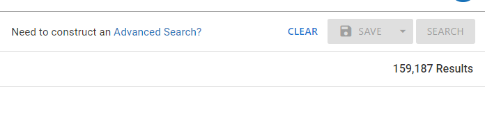

In

Click the button at the bottom-right corner.

The Visual Search dashboard appears.

Visual Search enables you to perform and review searches by using one of three 2-dimensional charts as well as a Concept Wheel. This type of searching lets you view results in a manner that correlates between two or more data fields, or in relation to a data set as a whole.
With Visual Search, you can also combine text-based and metadata-based criteria into a single search, with the options to specify a valid date range and to include document family members.
In
Click the button at the bottom-right corner.
The Visual Search dashboard appears.
|
|
Note: Adding criteria does not automatically run the search. When you are ready to run the search, click the Search button at the top-right corner of the screen. |
The following sections describe criteria you can add to modify the scope of your search. You can complete one or all, depending on how focused you would like the search to be. For more detailed information about defining search criteria, see
Text searches are, as the name implies, full text searches for words or phrases in case database fields (and corresponding images, native files, and so on). To search for a specific term or phrase, type the search expression into the main search bar.
Press Enter or select the magnifying glass beside the search bar to add the expression as a search criterion. A chip shows beneath the search bar that displays the term used in the search.

After the search expression has been entered, you can continue defining the visual search by selecting additional criteria, or you can run the search by clicking the Search button at the top-right corner of the screen.
|
|
Note: You can input only one search expression when defining a text search. Entering a second expression into the main search bar replaces the first. |
Search Filters allow you to further refine your search results by selecting one of the filter options in the Filters drop-down menu. The Filters icon is located at the top-left corner of the screen. Filters include all of the database fields in your case and system fields.

When performing a search that requires the use of a search relationship, use the Relationships drop-down menu. You can select only one from the list. The Relationships icon highlights blue to indicate that a relationship is selected.For more information about relationships, as well as a definition for each relationship in the list, see

This option allows you to organize (sort) search results based by field content (the columns in the case table) in ascending or descending order.

This option allows you to define a search to return a random sampling of documents matching your search criteria.

The Timeline (also located in Advanced Search) allows you select date criteria for the search. This includes limiting search results to a specific date range, which displays on the Timeline. You can select Include Empty & Invalid Dates as well.
To open the Timeline click the icon at the top of the screen.

The Timeline opens across the top of the dashboard.

When finished defining your Timeline search, close the Timeline by selecting the X icon at the top-right corner of the Timeline dialog box. To remove the date filtering, click the Reset button. The Timeline icon highlights blue to indicate that the date range has been added to the search definition.
The dashboard is a full-screen display of all the Visual Search elements: Charts/Concept Wheel, plus the Results grid and the Search Report. For more information on the Dashboard, see
After you have added all your criteria to the search definition, run the search by selecting the Search button at the top-right corner of the screen. Alternatively, you can save the search by choosing the Save option.

For more information about saving searches, see
Search results
are based on the entire case. After a search is run, the results will display in each of the dashboard charts and the results grid. See
Search “hits” are highlighted in tabs within the Document Viewer if the search term exists in the image, native, and/or extracted text file, not if the term exists only within a field(s).
Web Viewer: Hits are highlighted if a native file associated with the selected record exists and contains the search term.
Text: Hits are highlighted if text (OCR) associated with the selected record exists and contains the search term.
The following example shows an excerpt of search results (highlighted in yellow) in the Text tab.

After you have built and saved a Visual Search, you can edit the search within the Advanced Search tab by clicking Need to construct an Advanced Search? at the top right of the dashboard.

To continue with an Advanced Search, see
Related Topics